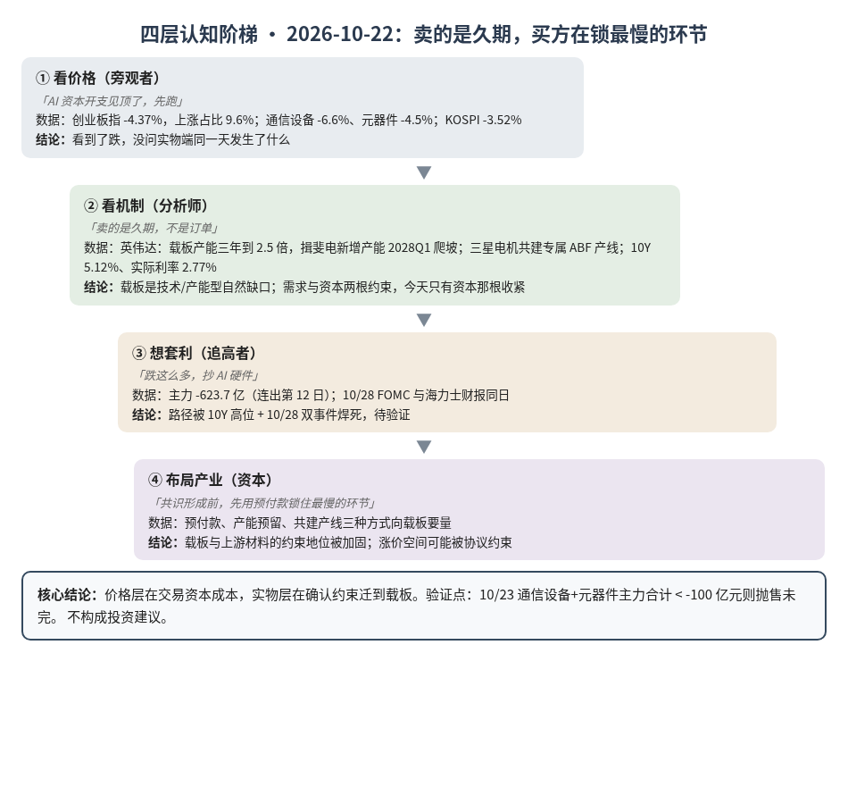
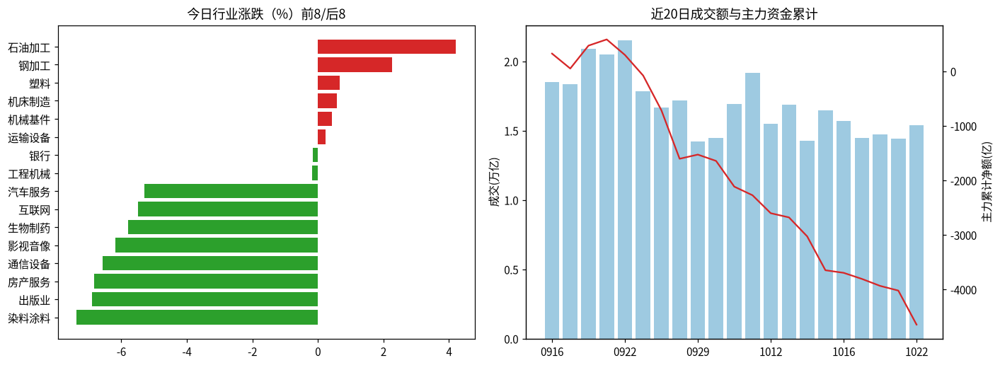
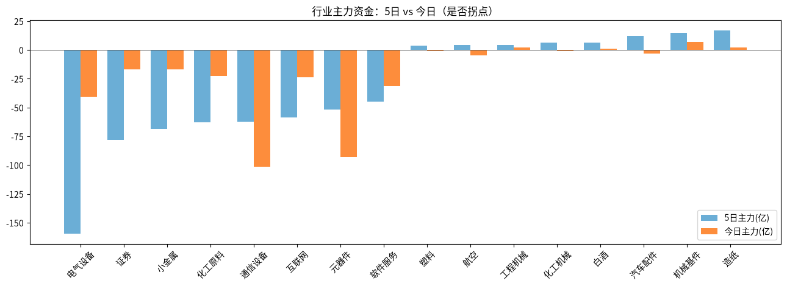

A股投研日报 · 2026-10-22（四层认知版）
- 主线
- 全球 AI 硬件同日被抛售，而英伟达正在出钱锁定扩得最慢的载板产能。
- 最重要变化点
- 创业板指 -4.37% 收 2,576.90，上涨仅 9.6%，主力 -623.7 亿元（连出第 12 日）；通信设备 -101.4 亿、元器件 -93.0 亿。
- 机制含义
- 价格层在交易资本成本（10Y 5.12%、实际利率 2.77%），实物层在确认约束迁到载板：买方开始用预付款和共建产线锁产能。
- 下一个观察点
- 10/23 收盘通信设备与元器件主力合计再 < -100 亿元则抛售未完；转为净流入则今天是一次性去杠杆。
本报告为基于公开数据的研究分析，不构成投资建议。
今日市场概况
数据管道速览（Tushare 收盘数据，规则生成，正文判断见下文）
- 指数：上证指数 -1.48% 收 3,658.03，创业板指 -4.37% 收 2,576.90；深证成指 -2.96%、科创50 -2.78%、上证50 -0.81%、沪深300 -1.84%、中证500 -2.71%、中证1000 -2.98%（Tushare）。
- 量能与宽度：成交 15,419 亿元（20 日均 16,784 亿元）；上涨 535 家 / 下跌 4,999 家，上涨占比 9.6%，个股中位数 -2.5%。
- 主力资金：全 A 主力 -623.7 亿元，连续第 12 日净流出。
- 行业：主力流入居前 机械基件（+7.1 亿）、水力发电（+2.2 亿）、造纸（+2.0 亿）；流出居前 通信设备（-101.4 亿）、元器件（-93.0 亿）、半导体（-54.7 亿）。
- 龙虎榜 / 北向：机构专用席位合计 -4.12 亿元；沪深股通成交前五 宁德时代、中际旭创、新易盛、紫金矿业、药明康德（成交额≠净买入）。
变化点
方法：四层认知阶梯 + 历史周期律。数据 Tushare（见附录）。不构成投资建议。
一、世界观定位
阶段不变，回退条件不变（三国鼎立→楚汉之争过渡带）。今天变的是楚汉层的传导：美股 10/21 收涨（纳指 +1.05%），亚洲次日却普跌，KOSPI -3.52%、日经 -2.65%，软银较 6 月高点市值腰斩、市场归因借贷成本 源。韩国央行称股价波动反映“对 AI 投资放缓的担忧” 源。五盏灯 4 黄 1 红未变，AI/半导体周期灯内铜/金比 🟢→🟡（1.576）。原型沿用“萧何转漕”：战力在扩，粮价在涨。
二、变化一（主变化）：英伟达预付锁产能，市场同日抛售 AI 硬件
第1层 · 看价格：「AI 资本开支见顶了，先跑」。通信设备 -6.6%，元器件（Tushare 分类，含 PCB/覆铜板）-4.5%；港股恒生科技午盘 -4.64% 源；晚间费城半导体盘中 -5.67% 源。结论：看到了跌，没问实物端同一天发生了什么。
第2层 · 看机制：「卖的是久期，不是订单」。10/21 英伟达宣布与揖斐电、三星电机、欣兴的协议将使其载板产能三年内到 2.5 倍；揖斐电小野厂新增产能 2028Q1 才爬坡，欣兴 2027Q2 起加产能 源。三星电机称双方共同出资建专属 ABF 产线 源；另有报道称特斯拉、英伟达合计出资 3.7 万亿韩元（一方称） 源。买方掏钱建产能，说明载板是技术/产能型自然缺口，扩产以年计。资本端：10Y 5.12%、实际利率 2.77%（FRED，10/20）。风险敞口接口：复核后有效断供 Δ$≈0。结论：需求与资本是两根约束，今天只有资本那根收紧推断。
第3层 · 想套利：「跌这么多，抄 AI 硬件」。摩根大通称对冲基金已大幅减仓、抛售或将缓和（一方称） 源。但路径被「10Y 高位 + 10/28 FOMC 与海力士财报同日」焊死。结论：标为待验证。
第4层 · 布局产业：「共识形成前，先用预付款锁住最慢的环节」。最大买方用预付款、产能预留和共建产线向上游载板要量；代价是供给方的涨价空间可能被协议约束推断。结论：只看环节——载板与其上游材料的约束地位被加固，节奏仍由资本成本决定。
检查清单：缺口性质 = 载板为自然缺口；替代弹性低（买方选择出资而非换供应商）；领先 = 预付款、产能预留、交期，滞后 = 季报毛利率、股价。
| 案例 | 核心论点 | 今日数据 | 判定 |
|---|---|---|---|
| 案例7 字节贷款 | 资本价格决定 AI 扩张速度 | 实际利率 2.77%；全球 AI 硬件同日下跌 | 强化 |
| 案例3 装片机/键合机 | 订单领先收入 | 载板产能 2028Q1 才爬坡，订单先行 | 弱强化 |
| 案例8 另类数据 | 过程领先结果 | 三星电机 MLCC 交期 52 周（业内人士称） | 待补充，单一来源 |
四、上一交易日验证点回顾（10/21 → 10/22）
| # | 验证点 | 今日读数 | 判定 |
|---|---|---|---|
| 1 | 电气设备单日 < -30 亿 / 碳酸锂 < 90,000 | -40.4 亿；碳酸锂主力 94,180 | 命中 / 未触发 |
| 2 | 10Y 连续 2 日 <5.0% 或上穿 5.2% | 5.12%（10/20），10/21 官方未出 | 待补充 |
| 3 | KOSPI 守 5,700、海力士守 125 万韩元 | 5,533.77；122.3 万（恰为 10/20 收盘线） | 未达标 |
| 4 | 主力首个净流入；创业板跌破 2,650 | -623.7 亿；2,576.90 | 命中：出清加速 |
| 5 | 台积电钢构两周内复工 | 未见新消息 | 待验证 |
| 6 | DDR5 本周累计跌 >3% | 61.10 美元，未跌 | 未触发 |
| 7 | 铜/金比连续 5 日🟢；VIX/VIX3M ≥1.00 | 转🟡 1.576；0.89 | 未达标 / 未触发 |
| 8 | 布伦特（10/20 点）突破 111.99 | 10/21 结算 108.82 源 | 未触发 |
五、供应链风险敞口（人工复核版）
脚本版见 risk_section_20261022.md。口径为 GB300/NVL72 当量柜年化系统价值；Δ$ 为事件类型假设模板，仅用于排序，非预测。 基线沿用 10/21：年化 EL $5.77B。脚本 2 条，误匹配 2 条（海力士 iHBM 筹备、美光放弃 4F²，均为路线图消息）。复核后今日有效断供 Δ$≈0。英伟达载板扩产属供给正面信息，不计入。采集降级：巨潮连接超时。
六、机会表（产业/环节层面，不构成投资建议）
| 机会 | 变化信号 | 认知层级 | 关键风险 |
|---|---|---|---|
| 扩得最慢的物理环节（ABF 载板及上游材料） | 英伟达预付与共建产线 | 第2层已查证 + 第4层方向 | 协议锁价压缩涨价空间 |
| “AI 硬件跌多了抄底” | 创业板 -4.37%、主力 -623.7 亿 | 第3层（陷阱） | 10Y 高位、10/28 双事件 |
七、明日/本周验证点（可证伪）
- 10/23 通信设备 + 元器件主力合计 < -100 亿元，则抛售未完；转为净流入，则今天是一次性去杠杆。
- 创业板收复 2,650 为弱确认；跌破 2,500 则出清继续加速。
- 10Y 收盘上穿 5.2% 则资本收紧升级；连续 2 日 <5.0% 则降级。
- 10/28 海力士财报与 FOMC：营业利润明显低于一致预期 76.96 万亿韩元或 FOMC 加息，则 AI 链进入需求与资本双重检验。

一句话总结：市场卖的是 AI 的久期，最大买方却在掏钱锁定扩得最慢的载板，两者不矛盾：需求没松，钱变贵了。
本报告为基于公开数据的研究分析，不构成任何投资建议。
附录：市场数据（证据底稿）


| 收盘 | 今日% | 5日% | 20日% | MA20 | 成交(亿) | |
|---|---|---|---|---|---|---|
| 上证指数 | 3,658.03 | -1.48 | -1.33 | -6.00 | 3,813.14 | 7,060.96 |
| 深证成指 | 11,357.32 | -2.96 | -3.89 | -15.59 | 12,625.87 | 4,115.37 |
| 创业板指 | 2,576.90 | -4.37 | -7.41 | -22.18 | 3,036.92 | 1,738.94 |
| 科创50 | 1,305.87 | -2.78 | -3.95 | -19.20 | 1,485.31 | 728.10 |
| 上证50 | 2,724.81 | -0.81 | -1.46 | -4.90 | 2,810.97 | 1,329.73 |
| 沪深300 | 4,036.30 | -1.84 | -3.11 | -9.91 | 4,313.60 | 4,350.84 |
| 中证500 | 6,655.25 | -2.71 | -1.68 | -13.38 | 7,258.23 | 2,537.93 |
| 中证1000 | 6,578.27 | -2.98 | -1.50 | -13.30 | 7,171.23 | 2,913.37 |
行业资金热力（按5日主力净额排序，前8/后8）
| industry | 今日% | 5日% | 20日% | 今日主力(亿) | 5日主力(亿) | 资金连续天数 |
|---|---|---|---|---|---|---|
| 造纸 | -3.7 | -3.3 | 2.2 | 2.0 | 17.0 | 21.0 |
| 机械基件 | 0.4 | 7.0 | 40.5 | 7.1 | 14.8 | 1.0 |
| 汽车配件 | -1.8 | 6.3 | 7.3 | -3.3 | 12.4 | -2.0 |
| 白酒 | -1.0 | -1.1 | 2.0 | 1.2 | 6.7 | 1.0 |
| 化工机械 | -1.1 | 3.3 | -12.7 | -1.1 | 6.4 | -1.0 |
| 工程机械 | -0.2 | 2.7 | -7.3 | 2.0 | 4.3 | 1.0 |
| 航空 | -2.9 | 2.7 | -2.5 | -4.7 | 4.2 | -3.0 |
| 塑料 | 0.7 | 4.0 | 71.9 | -0.9 | 3.8 | -1.0 |
| 电气设备 | -2.1 | -6.2 | -11.3 | -40.4 | -159.4 | -8.0 |
| 证券 | -0.8 | -5.2 | -3.0 | -16.6 | -77.9 | -5.0 |
| 小金属 | -3.1 | -4.7 | 30.9 | -17.1 | -68.8 | -9.0 |
| 化工原料 | -4.4 | -6.2 | -9.7 | -22.8 | -63.0 | -9.0 |
| 通信设备 | -6.6 | -2.1 | -18.1 | -101.4 | -62.3 | -1.0 |
| 互联网 | -5.5 | -5.2 | 0.3 | -23.9 | -58.6 | -6.0 |
| 元器件 | -4.5 | -2.4 | -13.9 | -93.0 | -51.9 | -1.0 |
| 软件服务 | -3.4 | 3.2 | 7.4 | -31.1 | -44.6 | -1.0 |
市场情绪时间序列（近10日）
| trade_date | 成交(亿) | 上涨占比% | 主力净额(亿) | 个股中位涨跌% |
|---|---|---|---|---|
| 20261009 | 19166.9 | 59.3 | -158.1 | 0.6 |
| 20261012 | 15507.5 | 21.0 | -329.2 | -1.7 |
| 20261013 | 16889.1 | 52.3 | -76.8 | 0.2 |
| 20261014 | 14264.0 | 17.6 | -348.2 | -1.9 |
| 20261015 | 16457.2 | 7.7 | -620.8 | -3.0 |
| 20261016 | 15690.7 | 59.3 | -47.2 | 0.5 |
| 20261019 | 14487.9 | 40.9 | -111.4 | -0.4 |
| 20261020 | 14715.3 | 67.9 | -127.9 | 1.0 |
| 20261021 | 14420.6 | 35.6 | -86.3 | -0.4 |
| 20261022 | 15418.6 | 9.6 | -623.7 | -2.5 |
今日上涨535家/下跌4999家，涨幅≥9.8% 38家、跌幅≤-9.8% 95家¹。
龙虎榜侧写：机构专用席位合计 -4.12 亿；净买入居前 安培龙(+1.51亿)、博汇股份(+1.25亿)、昂利康(+0.59亿)，净卖出居前 华盛昌(-2.09亿)、中新赛克(-1.17亿)、粤传媒(-1.11亿)。 沪深股通活跃股：成交前五为宁德时代、中际旭创、新易盛、紫金矿业、药明康德（成交额≠净买入）。
注：¹涨跌停为按±9.8%阈值近似（limit_list_d无权限）。²行业为Tushare stock_basic分类自行聚合（sw_daily/ths_daily/行业资金流接口无权限），成交加权、剔除N/C新股，成分≥8只。³主力=大单+特大单净额（moneyflow）。⁴2024年8月起北向每日净买入停止披露，moneyflow_hsgt/hsgt_top10数值为成交口径，不可解读为净流入。⁵新闻/公告接口无权限，改用新浪财经7x24公开快讯自动抓取+人工补充。
接口状态：trade_cal:OK；stock_basic:OK；index_daily:OK；moneyflow_hsgt:OK；hsgt_top10:OK；top_list:OK；top_inst:OK；index_dailybasic:OK；新浪7x24(公开):OK 1500条